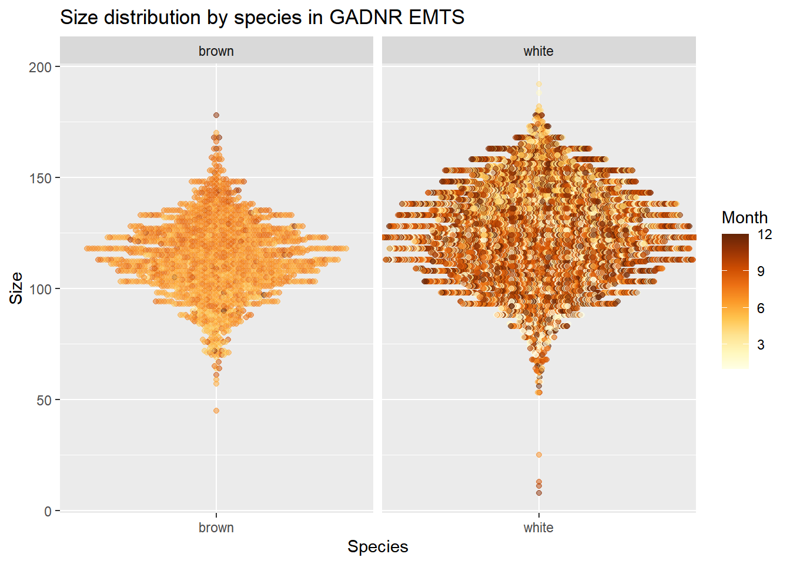
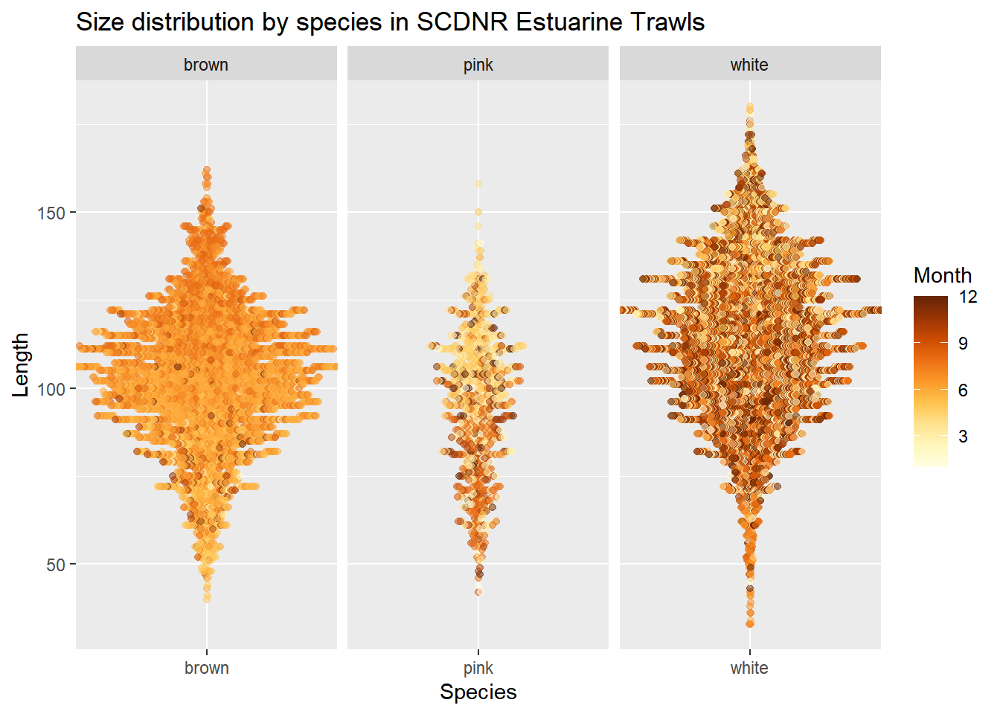
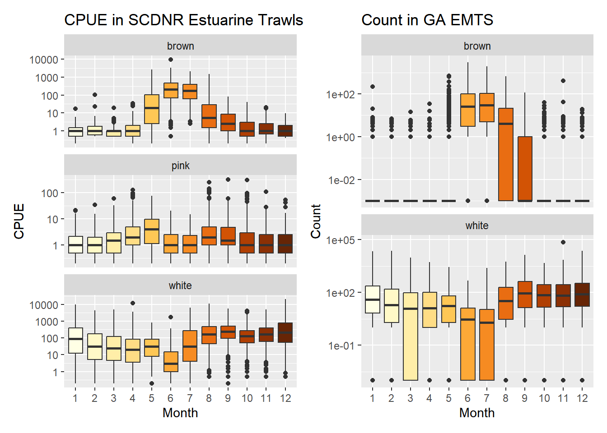

3 Subadults
3.1 Datasets
There are two datasets that represent subadults: GADNR’s EMTS sampling and SCDNR’s Estuarine Trawls. We will explore each.
3.2 Graphics - Size Distributions
South Carolina’s file has over 300,000 points, which makes for a beeswarm plot that is very large and slow to render. Georgia’s file is “only” 65k and even it is too slow to render beeswarm plots. So rather than graphing the full datasets, I have randomly sampled 10,000 rows from GA and 15,000 rows from SC (because SC has three species).

3.3 Graphics - Abundance/CPUE Boxplots

Both surveys (unsurprisingly) show the same temporal pattern of abundance - brown shrimp most abundant in June and July, also high in August; and May in SC. For white shrimp, we see a dip in June and (less so) July.
3.4 Tabular summaries of abundance
GADNR EMTS
Click to expand
| Name | subad_ga_count |
| Number of rows | 39669 |
| Number of columns | 14 |
| _______________________ | |
| Column type frequency: | |
| character | 2 |
| Date | 1 |
| numeric | 11 |
| ________________________ | |
| Group variables | None |
Variable type: character
| skim_variable | n_missing | complete_rate | min | max | empty | n_unique | whitespace |
|---|---|---|---|---|---|---|---|
| RefNum | 0 | 1 | 12 | 12 | 0 | 19828 | 0 |
| Species | 0 | 1 | 5 | 5 | 0 | 2 | 0 |
Variable type: Date
| skim_variable | n_missing | complete_rate | min | max | median | n_unique |
|---|---|---|---|---|---|---|
| GuessedDate | 0 | 1 | 1975-12-19 | 2021-10-26 | 2000-01-10 | 3254 |
Variable type: numeric
| skim_variable | n_missing | complete_rate | mean | sd | p0 | p25 | p50 | p75 | p100 |
|---|---|---|---|---|---|---|---|---|---|
| TotWt | 3 | 1.00 | 1491.00 | 8839.01 | 0 | 0.00 | 27.22 | 680.39 | 1394789.25 |
| TotNum | 83 | 1.00 | 115.10 | 610.81 | 0 | 0.00 | 2.00 | 43.00 | 73800.00 |
| SampleWt | 13 | 1.00 | 382.37 | 716.10 | 0 | 0.00 | 27.22 | 680.39 | 65770.89 |
| SampleNum | 120 | 1.00 | 28.03 | 47.17 | 0 | 0.00 | 2.00 | 42.00 | 1220.00 |
| NumMeas | 21154 | 0.47 | 12.23 | 16.40 | 0 | 0.00 | 2.00 | 30.00 | 207.00 |
| LbsperHr | 12269 | 0.69 | 17.83 | 75.69 | 0 | 0.16 | 2.08 | 12.88 | 7060.50 |
| NumperLb | 12359 | 0.69 | 33.89 | 253.35 | 0 | 15.27 | 25.60 | 40.00 | 31751.50 |
| NumFemales | 2395 | 0.94 | 7.63 | 10.59 | 0 | 0.00 | 2.00 | 15.00 | 122.00 |
| NumMales | 2382 | 0.94 | 6.27 | 9.46 | 0 | 0.00 | 1.00 | 11.00 | 97.00 |
| Year | 0 | 1.00 | 1998.94 | 13.00 | 1975 | 1988.00 | 2000.00 | 2010.00 | 2021.00 |
| Month | 0 | 1.00 | 6.49 | 3.42 | 1 | 4.00 | 6.00 | 9.00 | 12.00 |
SCDNR Estuarine Trawls
Click to expand
| Name | subad_sc_cpue |
| Number of rows | 21771 |
| Number of columns | 13 |
| _______________________ | |
| Column type frequency: | |
| character | 5 |
| numeric | 8 |
| ________________________ | |
| Group variables | None |
Variable type: character
| skim_variable | n_missing | complete_rate | min | max | empty | n_unique | whitespace |
|---|---|---|---|---|---|---|---|
| estuary | 0 | 1 | 2 | 2 | 0 | 6 | 0 |
| StationCode | 0 | 1 | 4 | 4 | 0 | 24 | 0 |
| DTStart | 0 | 1 | 8 | 10 | 0 | 1647 | 0 |
| SpCode | 0 | 1 | 4 | 4 | 0 | 3 | 0 |
| Species | 0 | 1 | 4 | 5 | 0 | 3 | 0 |
Variable type: numeric
| skim_variable | n_missing | complete_rate | mean | sd | p0 | p25 | p50 | p75 | p100 |
|---|---|---|---|---|---|---|---|---|---|
| X | 0 | 1 | 10886.00 | 6284.89 | 1.000e+00 | 5443.50 | 10886.00 | 16328.50 | 21771.00 |
| Coll | 0 | 1 | 19986283.95 | 122808.61 | 1.979e+07 | 19890034.00 | 19970150.00 | 20090016.00 | 20230114.00 |
| Year | 0 | 1 | 1998.61 | 12.29 | 1.979e+03 | 1989.00 | 1997.00 | 2009.00 | 2023.00 |
| Month | 0 | 1 | 6.60 | 3.37 | 1.000e+00 | 4.00 | 6.00 | 9.00 | 12.00 |
| Day | 0 | 1 | 17.04 | 8.02 | 1.000e+00 | 11.00 | 18.00 | 23.00 | 31.00 |
| CPUE | 4 | 1 | 119.11 | 525.17 | 0.000e+00 | 0.00 | 0.50 | 24.00 | 20052.00 |
| Latitude | 0 | 1 | 32.57 | 0.23 | 3.215e+01 | 32.32 | 32.67 | 32.77 | 32.83 |
| Longitude | 0 | 1 | -80.30 | 0.36 | -8.085e+01 | -80.65 | -80.29 | -79.92 | -79.89 |
3.5 Tabular summaries of size
3.5.1 Brown Shrimp
GADNR EMTS
Click to expand
| Name | subad_ga_size_brown |
| Number of rows | 11029 |
| Number of columns | 4 |
| _______________________ | |
| Column type frequency: | |
| character | 3 |
| numeric | 1 |
| ________________________ | |
| Group variables | None |
Variable type: character
| skim_variable | n_missing | complete_rate | min | max | empty | n_unique | whitespace |
|---|---|---|---|---|---|---|---|
| RefNum | 0 | 1 | 12 | 12 | 0 | 745 | 0 |
| TowDate | 0 | 1 | 8 | 10 | 0 | 308 | 0 |
| Species | 0 | 1 | 5 | 5 | 0 | 1 | 0 |
Variable type: numeric
| skim_variable | n_missing | complete_rate | mean | sd | p0 | p25 | p50 | p75 | p100 |
|---|---|---|---|---|---|---|---|---|---|
| Size | 0 | 1 | 113.84 | 17.45 | 8 | 103 | 114 | 125 | 182 |
SCDNR Estuarine Trawls
Click to expand
| Name | sz_sc_brn |
| Number of rows | 66499 |
| Number of columns | 15 |
| _______________________ | |
| Column type frequency: | |
| character | 5 |
| numeric | 10 |
| ________________________ | |
| Group variables | None |
Variable type: character
| skim_variable | n_missing | complete_rate | min | max | empty | n_unique | whitespace |
|---|---|---|---|---|---|---|---|
| SpCode | 0 | 1 | 4 | 4 | 0 | 1 | 0 |
| Sex | 0 | 1 | 0 | 1 | 61324 | 4 | 0 |
| estuary | 0 | 1 | 2 | 2 | 0 | 6 | 0 |
| StationCode | 0 | 1 | 4 | 4 | 0 | 24 | 0 |
| Species | 0 | 1 | 5 | 5 | 0 | 1 | 0 |
Variable type: numeric
| skim_variable | n_missing | complete_rate | mean | sd | p0 | p25 | p50 | p75 | p100 |
|---|---|---|---|---|---|---|---|---|---|
| X | 0 | 1.00 | 129622.34 | 80691.21 | 1.000e+00 | 59387.50 | 126106.00 | 187401.50 | 304572.00 |
| Coll | 0 | 1.00 | 19955732.85 | 112429.92 | 1.979e+07 | 19870163.00 | 19940120.00 | 20010143.00 | 20230106.00 |
| Length | 0 | 1.00 | 102.12 | 19.99 | 2.100e+01 | 90.00 | 103.00 | 115.00 | 177.00 |
| Year | 0 | 1.00 | 1995.56 | 11.25 | 1.979e+03 | 1987.00 | 1994.00 | 2001.00 | 2023.00 |
| Month | 0 | 1.00 | 6.66 | 1.22 | 1.000e+00 | 6.00 | 6.00 | 7.00 | 12.00 |
| Day | 0 | 1.00 | 17.19 | 7.95 | 1.000e+00 | 10.00 | 19.00 | 24.00 | 31.00 |
| Latitude | 0 | 1.00 | 32.68 | 0.19 | 3.215e+01 | 32.67 | 32.77 | 32.80 | 32.83 |
| Longitude | 0 | 1.00 | -80.12 | 0.30 | -8.085e+01 | -80.29 | -79.97 | -79.92 | -79.89 |
| TempB | 1640 | 0.98 | 27.81 | 2.84 | 0.000e+00 | 27.00 | 28.40 | 29.40 | 32.40 |
| SalinityB | 2759 | 0.96 | 24.83 | 6.13 | 0.000e+00 | 21.00 | 26.00 | 30.00 | 39.00 |
3.5.2 White Shrimp
GADNR EMTS
Click to expand
| Name | subad_ga_size_white |
| Number of rows | 54505 |
| Number of columns | 4 |
| _______________________ | |
| Column type frequency: | |
| character | 3 |
| numeric | 1 |
| ________________________ | |
| Group variables | None |
Variable type: character
| skim_variable | n_missing | complete_rate | min | max | empty | n_unique | whitespace |
|---|---|---|---|---|---|---|---|
| RefNum | 0 | 1 | 12 | 12 | 0 | 2231 | 0 |
| TowDate | 0 | 1 | 8 | 10 | 0 | 726 | 0 |
| Species | 0 | 1 | 5 | 5 | 0 | 1 | 0 |
Variable type: numeric
| skim_variable | n_missing | complete_rate | mean | sd | p0 | p25 | p50 | p75 | p100 |
|---|---|---|---|---|---|---|---|---|---|
| Size | 0 | 1 | 124.02 | 21.61 | 2 | 108 | 124 | 140 | 212 |
SCDNR Estuarine Trawls
Click to expand
| Name | sz_sc_wht |
| Number of rows | 224834 |
| Number of columns | 15 |
| _______________________ | |
| Column type frequency: | |
| character | 5 |
| numeric | 10 |
| ________________________ | |
| Group variables | None |
Variable type: character
| skim_variable | n_missing | complete_rate | min | max | empty | n_unique | whitespace |
|---|---|---|---|---|---|---|---|
| SpCode | 0 | 1 | 4 | 4 | 0 | 1 | 0 |
| Sex | 0 | 1 | 0 | 1 | 173246 | 4 | 0 |
| estuary | 0 | 1 | 2 | 2 | 0 | 6 | 0 |
| StationCode | 0 | 1 | 4 | 4 | 0 | 24 | 0 |
| Species | 0 | 1 | 5 | 5 | 0 | 1 | 0 |
Variable type: numeric
| skim_variable | n_missing | complete_rate | mean | sd | p0 | p25 | p50 | p75 | p100 |
|---|---|---|---|---|---|---|---|---|---|
| X | 0 | 1.00 | 165616.57 | 89820.94 | 7.000e+00 | 89692.25 | 172903.50 | 244450.75 | 307960.00 |
| Coll | 0 | 1.00 | 19991381.29 | 123497.97 | 1.979e+07 | 19890293.00 | 19970176.00 | 20090085.00 | 20230114.00 |
| Length | 0 | 1.00 | 113.38 | 22.51 | 1.100e+01 | 98.00 | 114.00 | 130.00 | 207.00 |
| Year | 0 | 1.00 | 1999.12 | 12.36 | 1.979e+03 | 1989.00 | 1997.00 | 2009.00 | 2023.00 |
| Month | 0 | 1.00 | 7.49 | 3.49 | 1.000e+00 | 4.00 | 8.00 | 10.00 | 12.00 |
| Day | 0 | 1.00 | 16.44 | 8.29 | 1.000e+00 | 10.00 | 17.00 | 23.00 | 31.00 |
| Latitude | 0 | 1.00 | 32.59 | 0.22 | 3.215e+01 | 32.46 | 32.67 | 32.77 | 32.83 |
| Longitude | 0 | 1.00 | -80.27 | 0.35 | -8.085e+01 | -80.54 | -80.24 | -79.92 | -79.89 |
| TempB | 4077 | 0.98 | 20.86 | 6.76 | 0.000e+00 | 15.00 | 20.60 | 27.90 | 32.40 |
| SalinityB | 4665 | 0.98 | 25.93 | 7.06 | 0.000e+00 | 22.00 | 27.00 | 31.00 | 209.00 |
3.6 About
Input .qmd file for this section was: raw_subad.qmd and can be found in the main directory.
Input data file(s) - as-used; can be found in data/raw/subad:
GADNR_EMTS_PenaeidShrimp_Brown_Count_thru2021.xlsxGADNR_EMTS_PenaeidShrimp_White_Count_thru2021.xlsxGADNR_EMTS_PenaeidShrimp_SIZE_thru2021.xlsx, sheet = “Brown shrimp”GADNR_EMTS_PenaeidShrimp_SIZE_thru2021.xlsx, sheet = “White Shrimp”SCDNR_EstuarineTrawlShrimpCPUE.csvSCDNR_EstuarineTrawlShrimpSize.csv
Modifications to data:
- All files: changed
Speciesfrom provided scientific names to ‘brown’, ‘white’, and ‘pink’.
- GA counts file: extracted date from the Reference Number, as date was not its own field.
- SC size file: filtered data to remove lengths >1000. There were 3 such rows.
Generated data file(s): Data frames were modified as described above, and written to data/intermediate/subadult_dfs.RData (the single .RData file contains multiple data frames):
subad_ga_countsubad_ga_sizesubad_sc_cpuesubad_sc_size
Other notes about data:
- In GA count files, early exploration not shown here indicated that
NumperLbwas mis-calculated when the sample weight wasn’t the typical 1360.78 - calculations in the spreadsheet used that value anyway. This issue seemed to happen when catch was low.